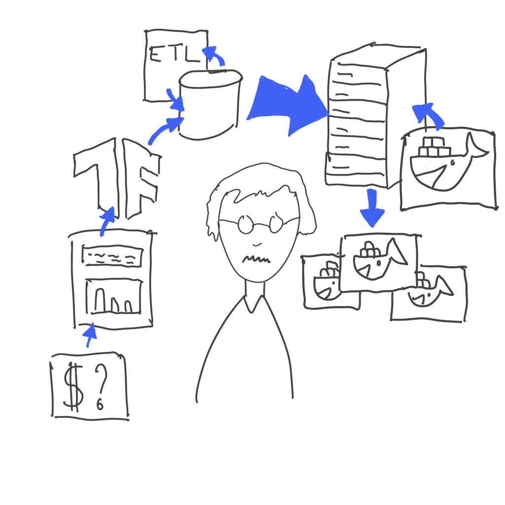

Stairway to containers
Virtualization
Virtualization
- abstraction layer over computer hardware
- hardware elements of a single computer are divided into multiple virtual computers (VM, Virtual Machine)
- Each VM runs its own operating system (OS) and behaves like an independent computer
Virtualization
Benefits
- Optimize IT hardware usage
- lower power consumption
- centralized management IT operation
- more reliability and security
Containerization
Difference to a VM
Containers all run on top of the same host OS and take up substantially less resources!
Linux namespaces
PID namespaces creation, bash process running
❯ sudo unshare --fork --pid --mount-proc bash
❯ ps -eo pid,user,tty,cmd
PID USER TT CMD
1 root pts/24 bash
22 root pts/24 ps -eo pid,user,tty,cmd
In the regular PID namespaces
❯ ps -eo pid,user,tty,cmd
PID USER TT CMD
...
3637495 root pts/24 sudo unshare --fork --pid --mount-proc bash
3637498 root pts/24 unshare --fork --pid --mount-proc bash
3637500 root pts/24 bash
...


Basic operations
-
Download an image
❯ docker pull debian -
Run a container
❯ docker run -it debian -
List running containers
❯ docker ps -
Remove containers
❯ docker rm 'id'
Basic operations
-
Environment variables / volumes and published ports
docker run -E ENV_NAME -V HOST:GUEST -p HOST:GUEST... -
Running named container in daemon mode
docker run --name NAME -d -
Attach to running containers
docker exec CONTAINER_ID COMMAND

Orchestration in K8S
Going to the cloud
PaaS - Platform as a Service - or match apps requirements to a cloud product catalogue

IaaS - Infrastructure as a Service - or copy your infrastructure to cloud VMs

CaaS - Container as a Service - or break your monoliths in microservices and go DevOps.

Kubernetes

Data pipelines
CRISP-DM revamped
Here is a data scientist.
Data scientists solve important business problems.
A good way to start solving a problem is to prototype a solution in a notebook.
There are great libraries available for machine learning that make prototyping fun.

After the first experiments, it is a good idea to start keeping track of models and data.

It can take a lot of work to get the latest data and keep the models up to date reliably.
Production workflows should run on servers, not on a laptop.

These days, servers execute containers. Workflows need to be packaged for execution.

Where should the results go? Sometimes they are deployed as containers too.
Containerized models can be consumed by business applications.

Stakeholders evaluate the results. They want more models and better models!
Directed Acyclic Graph
- contains directed edges
- no loops or cycles: no circular dependencies, no deadlock
- identification of tasks to be run in parallel
- separation of problems in incremental tasks
Apache Airflow
Architecture
Architecture: LocalExecutor
Installation
Installation
- in a virtual environment with pip
❯ virtualenv myenv ❯ source myenv/bin/activate ❯ pip install apache-airflow # Or simply with pipx ❯ pipx install apache-airflow - Runing inside docker, from within this repository
❯ make up - On kubernetes with a helm chart after cloning Airflow
git repository
❯ helm install airflow -n airflow chart
Concepts
DAG - Directed Acyclic Graph
- Collection of all the tasks you want to run
- reflects dags relationships and dependencies.
- defined in a Python script (tasks and their dependencies) as code.
- isn’t concerned with what its constituent tasks do
Its job is to make sure that whatever tasks do happens at the right time, or in the right order, or with the right handling of any unexpected issues.
DAG - Directed Acyclic Graph
DAGs are created by instanciation of the DAG
class.
from datetime import datetime
from airflow import DAG
from airflow.operators.dummy import DummyOperator
dag = DAG('my_dag', start_date=datetime(2021, 1, 1))
# Define some tasks
task_1 = DummyOperator(task_id='task_1', dag=dag)
task_2 = DummyOperator(task_id='task_2', dag=dag)
task_1 >> task_2 # Define dependencies
DAGs can be used as context managers to automatically assign new operators.
from datetime import datetime
from airflow import DAG
from airflow.operators.dummy import DummyOperator
with DAG('my_dag', start_date=datetime(2021, 1, 1)) as dag:
# Define some tasks
task_1 = DummyOperator(task_id='task_1')
task_2 = DummyOperator(task_id='task_2')
task_1 >> task_2 # Define dependencies
New API in Airflow 2: TaskFlow API
from datetime import datetime
from airflow.decorators import dag
from airflow.operators.dummy import DummyOperator
@dag(start_date=datetime(2021, 1, 1))
def my_dag():
# Define some tasks
task_1 = DummyOperator(task_id="task_1")
task_2 = DummyOperator(task_id="task_2")
task_1 >> task_2
must_be_in_global = my_dag()
DAG - scope
DAG object are imported if in globals().
üîó
dag_1 = DAG('this_dag_will_be_discovered')
def my_function():
dag_2 = DAG('but_this_dag_will_not')
# dag2 in a local scope and not in the DAG list
my_function()
Operators
- DAGs describe how to run a workflow, Operators determine what actually gets done by a task
- Generation of certain types of tasks.
- Become nodes in the DAG when instantiated.
- Derive from
BaseOperatorand inherit many attributes and methods.
Three main kind of operators
- Perform or trigger an action
- Transfer data from one system to another
- keep running until a certain criterion is met
(Sensors).
e.g. a specific file landing in HDFS or S3 or, a partition appearing in Hive
from airflow import DAG
from airflow.providers.http.operators.http import SimpleHttpOperator
from airflow.utils.dates import days_ago
with DAG("simplehttp01", schedule_interval="@once",
start_date=days_ago(0), tags=["http"]) as dag:
rest_call_ex01 = SimpleHttpOperator(
task_id="rest-call-ex01",
http_conn_id="http-disease.sh",
endpoint="/v3/covid-19/nyt/states",
method="GET",
log_response=True,
)
rest_call_ex01
Task lifecycle
Stages are displayed by a color in the UI
The happy flow
- No status (empty task instance)
- Scheduled (determined task instance needs to run)
- Queued (task sent to executor to run on the queue)
- Running (worker picked up a task)
- Success (task completed)
The complete lifecycle of the task looks like this

Scheduling
- A
DAG runcontains task instances that run for a specificexecution_date. - The
execution_dateis the logical date and time which the DAG Run. - This allows task instances to process data for the desired logical date & time
- schedule_interval is defined as a DAG argument, which can be
passed a cron expression as a
str, adatetime.timedeltaobject, or a cron “presets”
schedule_interval example
from airflow.models.dag import DAG
from airflow.operators.bash import BashOperator
from datetime import datetime, timedelta
default_args = { ... }
dag = DAG(
'tutorial',
description='A DAG running every day',
default_args=default_args,
start_date=datetime(2020, 12, 1),
schedule_interval='@daily',
catchup=False
)